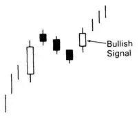
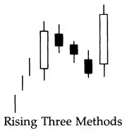

Candlesticks - Continuation
Windows

Mat-hold Pattern
Upward & Downward Gap Tasuki

Gapping Side-by-side White Lines

Rising & Falling Three Methods
- Ideal number of candlesticks in the counter group is 3.
- Two or more than three is acceptable, if within previous real body.
- Last day should close higher than the first one in uptrend.
- Last day should close lower than the first one in downtrend.
Three Advancing White Soldiers